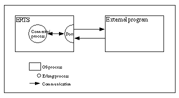

View Source Ports
This section outlines an example of how to solve the example problem in the previous section by using a port.
The scenario is illustrated in the following figure:

Erlang Program
All communication between Erlang and C must be established by creating the port. The Erlang process that creates a port is said to be the connected process of the port. All communication to and from the port must go through the connected process. If the connected process terminates, the port also terminates (and the external program, if it is written properly).
The port is created using the BIF open_port/2 with
{spawn,ExtPrg} as the first argument. The string ExtPrg is the name of the
external program, including any command line arguments. The second argument is a
list of options, in this case only {packet,2}. This option says that a 2 byte
length indicator is to be used to simplify the communication between C and
Erlang. The Erlang port automatically adds the length indicator, but this must
be done explicitly in the external C program.
The process is also set to trap exits, which enables detection of failure of the external program:
-module(complex1).
-export([start/1, init/1]).
start(ExtPrg) ->
spawn(?MODULE, init, [ExtPrg]).
init(ExtPrg) ->
register(complex, self()),
process_flag(trap_exit, true),
Port = open_port({spawn, ExtPrg}, [{packet, 2}]),
loop(Port).Now complex1:foo/1 and complex1:bar/1 can be implemented. Both send a
message to the complex process and receive the following replies:
foo(X) ->
call_port({foo, X}).
bar(Y) ->
call_port({bar, Y}).
call_port(Msg) ->
complex ! {call, self(), Msg},
receive
{complex, Result} ->
Result
end.The complex process does the following:
- Encodes the message into a sequence of bytes.
- Sends it to the port.
- Waits for a reply.
- Decodes the reply.
- Sends it back to the caller:
loop(Port) ->
receive
{call, Caller, Msg} ->
Port ! {self(), {command, encode(Msg)}},
receive
{Port, {data, Data}} ->
Caller ! {complex, decode(Data)}
end,
loop(Port)
end.Assuming that both the arguments and the results from the C functions are less
than 256, a simple encoding/decoding scheme is employed. In this scheme, foo
is represented by byte 1, bar is represented by 2, and the argument/result is
represented by a single byte as well:
encode({foo, X}) -> [1, X];
encode({bar, Y}) -> [2, Y].
decode([Int]) -> Int.The resulting Erlang program, including functionality for stopping the port and detecting port failures, is as follows:
-module(complex1).
-export([start/1, stop/0, init/1]).
-export([foo/1, bar/1]).
start(ExtPrg) ->
spawn(?MODULE, init, [ExtPrg]).
stop() ->
complex ! stop.
foo(X) ->
call_port({foo, X}).
bar(Y) ->
call_port({bar, Y}).
call_port(Msg) ->
complex ! {call, self(), Msg},
receive
{complex, Result} ->
Result
end.
init(ExtPrg) ->
register(complex, self()),
process_flag(trap_exit, true),
Port = open_port({spawn, ExtPrg}, [{packet, 2}]),
loop(Port).
loop(Port) ->
receive
{call, Caller, Msg} ->
Port ! {self(), {command, encode(Msg)}},
receive
{Port, {data, Data}} ->
Caller ! {complex, decode(Data)}
end,
loop(Port);
stop ->
Port ! {self(), close},
receive
{Port, closed} ->
exit(normal)
end;
{'EXIT', Port, Reason} ->
exit(port_terminated)
end.
encode({foo, X}) -> [1, X];
encode({bar, Y}) -> [2, Y].
decode([Int]) -> Int.C Program
On the C side, it is necessary to write functions for receiving and sending data
with 2 byte length indicators from/to Erlang. By default, the C program is to
read from standard input (file descriptor 0) and write to standard output (file
descriptor 1). Examples of such functions, read_cmd/1 and write_cmd/2,
follows:
/* erl_comm.c */
#include <stdio.h>
#include <unistd.h>
typedef unsigned char byte;
int read_exact(byte *buf, int len)
{
int i, got=0;
do {
if ((i = read(0, buf+got, len-got)) <= 0){
return(i);
}
got += i;
} while (got<len);
return(len);
}
int write_exact(byte *buf, int len)
{
int i, wrote = 0;
do {
if ((i = write(1, buf+wrote, len-wrote)) <= 0)
return (i);
wrote += i;
} while (wrote<len);
return (len);
}
int read_cmd(byte *buf)
{
int len;
if (read_exact(buf, 2) != 2)
return(-1);
len = (buf[0] << 8) | buf[1];
return read_exact(buf, len);
}
int write_cmd(byte *buf, int len)
{
byte li;
li = (len >> 8) & 0xff;
write_exact(&li, 1);
li = len & 0xff;
write_exact(&li, 1);
return write_exact(buf, len);
}Notice that stdin and stdout are for buffered input/output and must not be
used for the communication with Erlang.
In the main function, the C program is to listen for a message from Erlang
and, according to the selected encoding/decoding scheme, use the first byte to
determine which function to call and the second byte as argument to the
function. The result of calling the function is then to be sent back to Erlang:
/* port.c */
typedef unsigned char byte;
int main() {
int fn, arg, res;
byte buf[100];
while (read_cmd(buf) > 0) {
fn = buf[0];
arg = buf[1];
if (fn == 1) {
res = foo(arg);
} else if (fn == 2) {
res = bar(arg);
}
buf[0] = res;
write_cmd(buf, 1);
}
}Notice that the C program is in a while-loop, checking for the return value
of read_cmd/1. This is because the C program must detect when the port closes
and terminates.
Running the Example
Step 1. Compile the C code:
unix> gcc -o extprg complex.c erl_comm.c port.cStep 2. Start Erlang and compile the Erlang code:
unix> erl
Erlang (BEAM) emulator version 4.9.1.2
Eshell V4.9.1.2 (abort with ^G)
1> c(complex1).
{ok,complex1}Step 3. Run the example:
2> complex1:start("./extprg").
<0.34.0>
3> complex1:foo(3).
4
4> complex1:bar(5).
10
5> complex1:stop().
stop